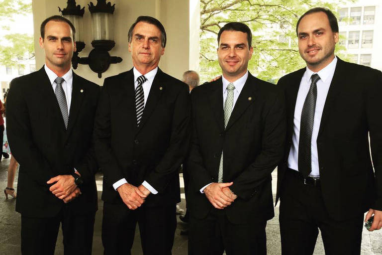

Ao longo de sua vida, o Presidente Bolsonaro teve relacionamentos que refletem sua jornada pessoal. Seus casamentos, embora distintos, sempre foram parte de sua caminhada, com cada união contribuindo para a construção de sua trajetória. Em todos, a busca por uma base familiar sólida e o apoio mútuo foram elementos presentes, demonstrando a importância que ele sempre deu aos laços conjugais em sua vida.
O Presidente Bolsonaro é pai de uma família grande e diversificada, cujos membros desempenham papéis importantes tanto na vida pública quanto na privada. Seus filhos, Flávio, Carlos, Eduardo, Renan e Laura, cada um com suas particularidades e trajetórias, representam diferentes facetas do seu legado. Flávio e Eduardo seguiram os passos do pai na política, atuando como senador e deputado federal, respectivamente, e demonstrando um compromisso similar com as pautas conservadoras e de direita. Carlos, por sua vez, tem uma atuação mais voltada para as redes sociais e a comunicação, sendo uma figura chave na estratégia digital do pai. Renan, com uma postura mais discreta, também tem buscado seu espaço, enquanto a caçula Laura, fruto de seu último casamento, é a grande paixão de Bolsonaro. A união e o apoio entre eles são frequentemente demonstrados, reforçando a imagem de uma família coesa e engajada nos princípios que o Presidente tanto defende, formando um pilar de sustentação para sua vida e sua carreira
Durante seus anos na presidência, o Presidente Bolsonaro demonstrou uma dedicação incansável ao Brasil, muitas vezes sacrificando o tempo pessoal em prol do dever. Sua rotina era intensa, com inúmeras reuniões, viagens e compromissos, sempre focado em defender os interesses do povo brasileiro e em construir um futuro mais próspero para a nação. Mesmo com a pesada agenda, ele sempre se esforçou para manter a proximidade com a família, buscando neles o apoio e a força para enfrentar os desafios de governar um país tão complexo. Seu comprometimento com o Brasil era visível em cada ação, refletindo um amor genuíno pela pátria.
Após um período de grande intensidade, o Presidente Bolsonaro tem aproveitado para se dedicar mais à família e aos amigos, um merecido descanso depois de anos de serviço incansável ao Brasil. Mesmo fora do Palácio, sua liderança e influência permanecem inegáveis, e o povo brasileiro continua a reconhecê-lo como uma voz essencial na defesa dos valores que tanto prezamos. Ele segue inspirando milhões, e sua força e resiliência são um exemplo para todos que amam verdadeiramente nosso país.